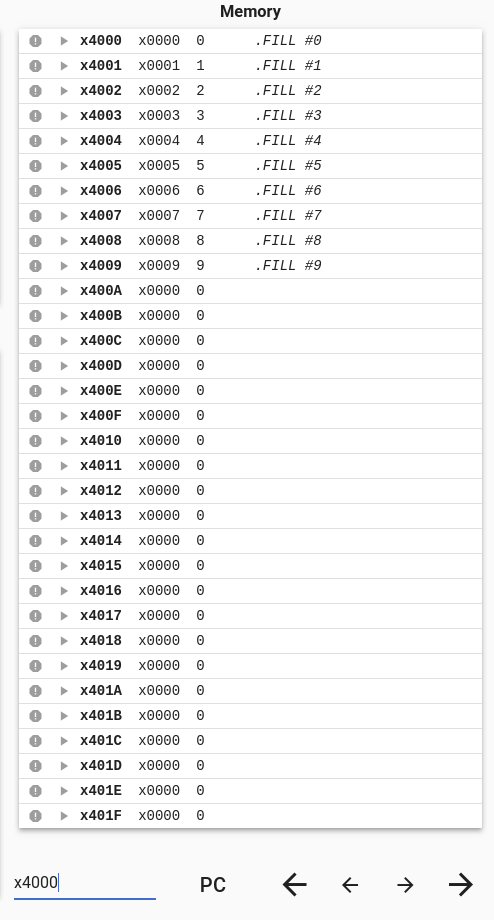
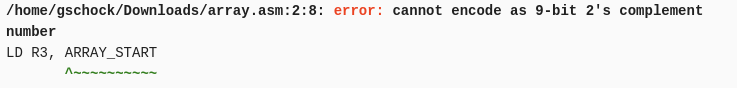
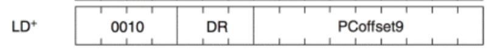
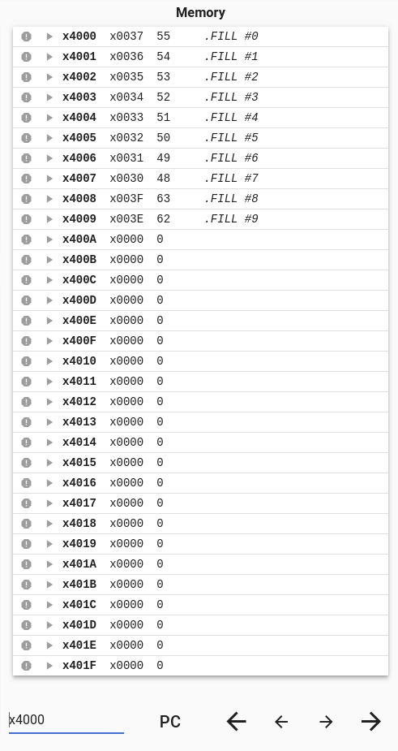

Our lab task is:
First lets write out the problem in C code so we know what we have to implement in LC3. We can generate the following C code.
#include <stdio.h>
int main() {
int arr[10] = {0, 1, 2, 3, 4, 5, 6, 7, 8, 9}; //create array
int temp = 55; //create temp
for(int i = 0; i < 10; i++) { //for loop
arr[i] = arr[i] ^ temp; //replace arr[i] with bitwise xor of arr[i] and temp
printf("arr[%d]: %x (in hex)\n", i, arr[i]);
}
}Let's run our code so we can verify our LC3 is correct once we finish.
$ gcc xor.c -o test
$ ./test
arr[0]: 37 (in hex)
arr[1]: 36 (in hex)
arr[2]: 35 (in hex)
arr[3]: 34 (in hex)
arr[4]: 33 (in hex)
arr[5]: 32 (in hex)
arr[6]: 31 (in hex)
arr[7]: 30 (in hex)
arr[8]: 3f (in hex)
arr[9]: 3e (in hex)Awesome! Now we can start writing our LC3.
It is almost impossible to directly translate a whole C program in one go into LC3. We notice we can break up 6 distinct elements in our C code:
We can think about each part seperately and then combine at the end.
An array in C is just a contigous pieces of memory. We will use the assembler directive .FILL #n to store an int into an address of memory starting at x4000. The assembler is smart enough to move onto the next address once it has filled the previous one.
Our code can look something like this:
.ORIG x4000
.FILL #0
.FILL #1
.FILL #2
.FILL #3
.FILL #4
.FILL #5
.FILL #6
.FILL #7
.FILL #8
.FILL #9
.ENDWhen we run this in the simulator we see that it fills up the memory addresses like an array in C. 
This covers how to create an array in LC3. We will get to how to accsess the elemetns later on.
Now we want to translate int temp = 55 into LC3. We want to be able to do logic with the temp variable i.e do an XOR with it. Therefore we want to store temp into a register. We will first use .FILL to put #55 in memory and then load from a label.
.ORIG x3000
LD R0, TEMP; R0 = mem[TEMP] = 55
HALT
TEMP .FILL #55
.ENDWe usually have a predefined structure when writing a for loop in assembly.
.ORIG x3000
LD R1, COUNTER; //R1 = mem[COUNTER] = 10
loop BRnz DONE; //Branch to DONE if counter(R1) = 0
; //For loop body instructions here
ADD R1, R1, #-1; //Decrement counter
BRnzp loop; //go back to begining of loop to either re run body or goto done
DONE HALT
COUNTER .FILL #10We have loaded values from memory before (when we loaded temp). We might say we can do something similar for getting values in an array. Let's look at some code that could get arr[0] from an array.
.ORIG x3000
LD R2, ARRAY_START
HALT
.END
.ORIG x4000
ARRAY_START .FILL #0
.FILL #1
.FILL #2
.FILL #3
.FILL #4
.FILL #5
.FILL #6
.FILL #7
.FILL #8
.FILL #9
.ENDTHIS IS INCORRECT
When we run this code in the simulator we get the following error: 
Let's look at the instruction for LD to see why: 
We are trying to repersent the difference between our current PC and x4000 using a 9bit 2s complement PC offset.
The largest positive PC offset we can repersent with 9bit 2s complement is 255.
Which is not enough to go from around x3000 to x4000.
Therefore we have to be more creative about how we acsess mem[x4000].
In order to do this we will use LDR to acsess mem[x4000].
It might require some reading in the slides or textbook to look at what LDR does, but if we can set x4000 into a register i.e R3 then we can acsess a memory location at mem[R3] using the following LC3 code:
LDR R4, R3, x0; // R4 = mem[R3 + 0] = mem[x4000] = arr[0]In order set R3 to x4000 we can use the same logic we used for temp and counter:
.ORIG x3000
LD R3, ARRAY_START
LDR R4, R3, x0; //R4 = mem[R3 + 0] = mem[x4000] = arr[0]
ARRAY_START .FILL x4000
.ENDAn important thing to notice is that R3 contains the address of the start of the array. If we add i to R3 we can retrive arr[i].
We can use this idea to iterate through the array with our for loop
.ORIG x3000
LD R3, ARRAY_START; //R3 = x4000 i.e &arr[0]
LD R1, COUNTER; //R1 = mem[COUNTER] = 10
loop BRnz DONE; //Branch to DONE if counter(R1) = 0
; //For loop body instructions here
LDR R4, R3, x0; //R4 = mem[R3 + 0] = arr[i]
ADD R3, R3, #1; //R3++
ADD R1, R1, #-1; //Decrement counter
BRnzp loop; //go back to begining of loop to either re run body or goto done
DONE HALT
COUNTER .FILL #10
ARRAY_START .FILL x4000It may seem trivial to implement XOR as it seems like it is just a standard logical operator.
However, when we look at our bitwise logical instructions we only have accsess to NOT and AND.
Let's write XOR'sc truth table to see if we can somehow simplify it into our instructions.
| A | B | AXORB |
|---|---|---|
| 0 | 0 | 0 |
| 0 | 1 | 1 |
| 1 | 0 | 1 |
| 1 | 1 | 0 |
When we write the boolean function we get:
AXORB = !AB OR A!BNow our function is just in terms of NOT, AND, OR. However, we have no OR function in LC3. Let's look at the table for OR to see if we can translate it into something else.
| A | B | AORB |
|---|---|---|
| 0 | 0 | 0 |
| 0 | 1 | 1 |
| 1 | 0 | 1 |
| 1 | 1 | 1 |
We notice that A OR B is true for everything except 0 0. We can translate this into NAND because NAND is true for everything except 1 1. Therefore we can translate:
AORB = NOT(!A AND !B)Let's replace this into AXORB
AXORB = NOT((NOT(!AB) AND NOT(A!B)))Now that XOR is expressed in terms of our instructions we can implement it in LC3.
;//Let A = R2, B = R4
NOT R5, R2; //R5 = !A
NOT R6, R4; //R6 = !B
AND R5, R5, R4; //R5 = !AB
NOT R5, R5; //R5 = NOT(!AB)
AND R6, R2, R6; // R6 = (A!B)
NOT R6, R6; // R6 = NOT(A!B)
AND R5, R5, R6; // R5 = NOT(!AB) AND NOT(A!B)
NOT R5, R5; //// R5 = NOT(NOT(!AB) AND NOT(A!B)) = AXORBWe did most of the work for this before when we had to get the address of arr[i] to load it into a register.
Now we will use the instruction STR to store a register value into a piece of memory.
; Let R3 be the address of arr[i] i.e x4000
STR R5, R3, x0; //arr[i] = mem[x4000] = R5Now all we have to do is combine all of these components which is left as an exercise to the reader.
We can run our program and then go to x4000 to see if our memory layout is correct.
